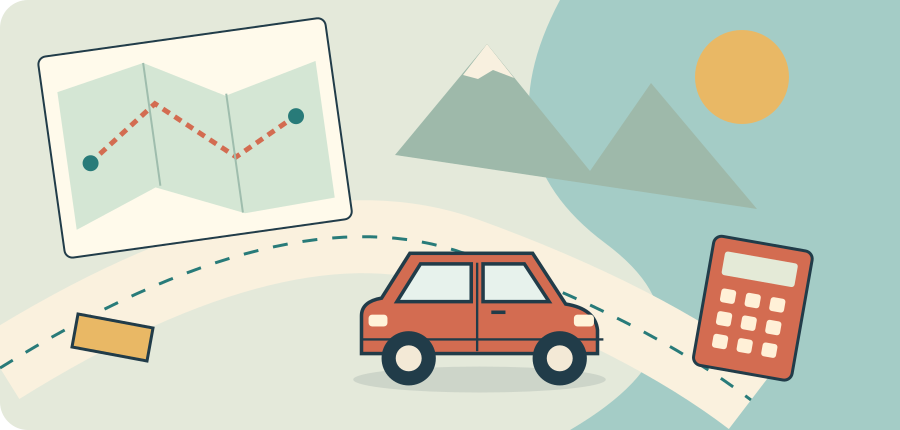
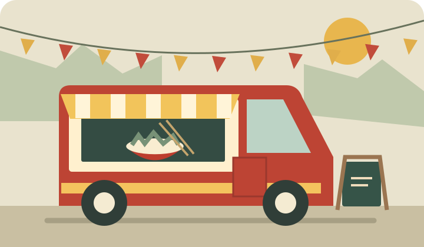
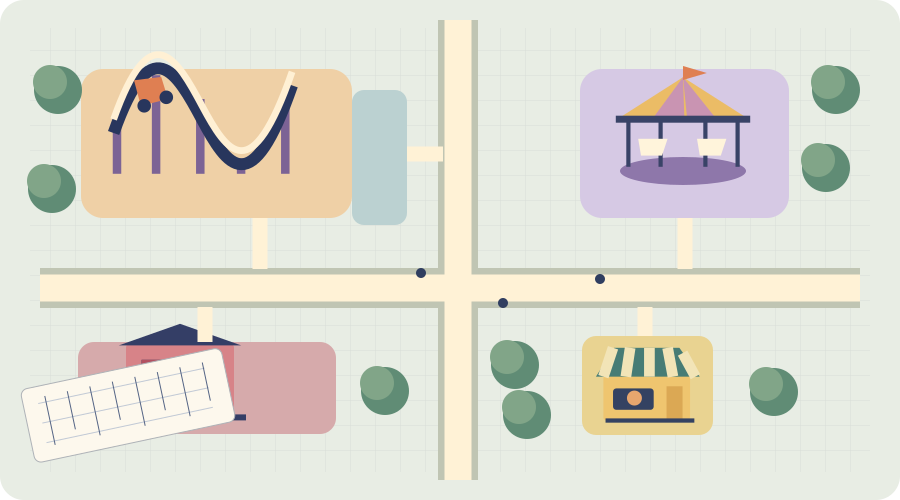
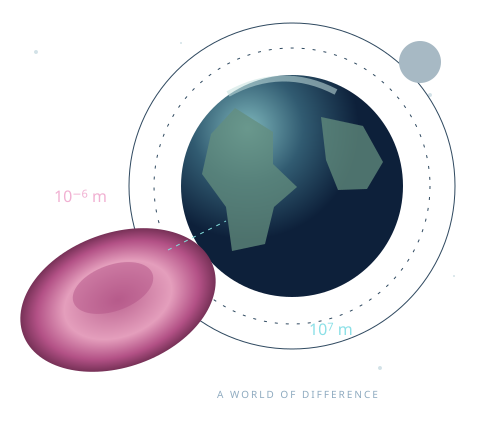
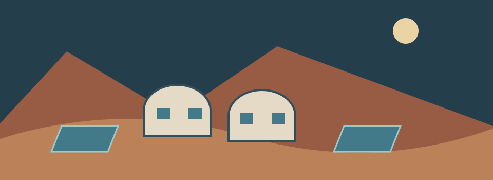

Road Trip Planner
Build a trip your clients will love—and a budget that adds up.
Rates · Budgets · Linear models
REAL DECISIONS. MEANINGFUL MATHEMATICS.
Plan a journey. Launch a business. Design something extraordinary. Choose a project and put mathematics to work.
Advanced Grade 5 · Pre-algebra

Build a trip your clients will love—and a budget that adds up.
Rates · Budgets · Linear models

Take a recipe to market. Find the price and plan that make it work.
Recipe scaling · Profit · Break-even

Turn an empty site into a park with room for every big idea.
Scale · Area · Spatial planning

Explore the very small and the very large. Make their scale tangible.
Scientific notation · Units · Scale models

Prepare a research outpost. Balance its resources and weather a solar storm.
Rates · Stock models · Capacity · Percent change
Each project saves progress in the browser used to open it. Use its Export / Import controls to move work between devices or from an older website address. QR codes open the activity; they do not create a shared class session.
Lesson estimates use 45-minute periods. Adjust to suit your class.